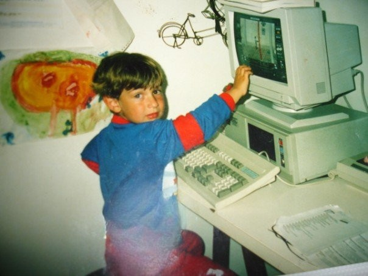
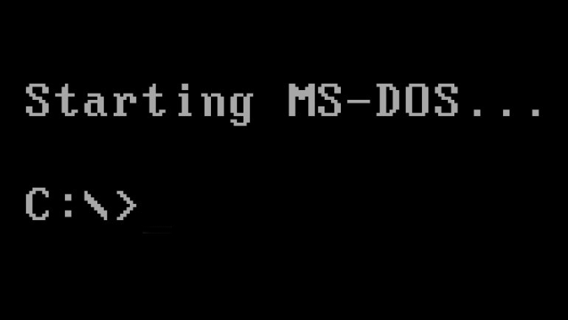
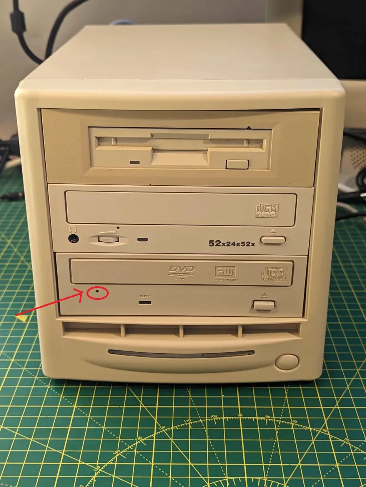
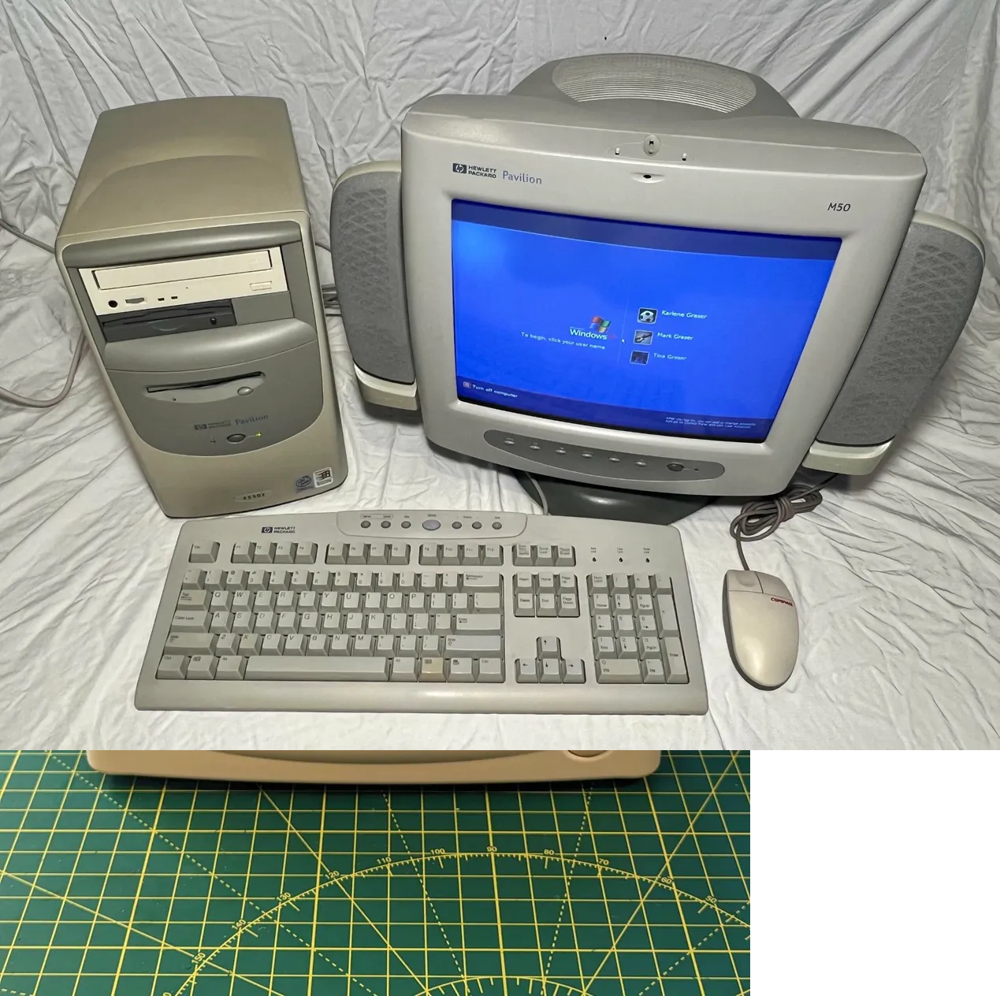

Sharing is caring | 30 years at a keyboard

That's me. Probably around 4 or 5. Already convinced I owned the place.
Can you tell what game is on screen? @Tag me on X if you know! I genuinely don't remember. (It's been secretly killing me not remembering.)
I care, so I share.
People ask me sometimes: "How do you just... know this stuff?" The answer is that I've been at it since before I could properly read. It's not talent. It's just years; layers and layers of time spent in front of a screen, making mistakes, fixing them, and doing it again.
This is that story.
Before Windows. Before the internet. Before everything.
I used to sneak out of bed before anyone else was awake, tiptoe into the room where the family computer lived, and turn it on just to watch it boot.

That blinking cursor on a black screen. MS-DOS loading line by line. It was the most fascinating thing I had ever seen. I'd ask what each command did. dir. cd. And focus on what I wanted, play "Prince of Persia" or Commander Keen.
I played Prince of Persia. Commander Keen, and games I can't even name anymore. (The photo above, I genuinely have no idea what's on that screen. If you recognise it, tell me on X or e-mail me.)
One of my earliest computer crimes: a friend gave me a floppy disk with Commander Keen on it. I put it in the drive, ran it, and corrupted the entire machine with a virus. I didn't understand what had happened. I just knew the computer stopped working and it was somehow my fault. That was my first real lesson in: don't trust executable files from unknown sources. Learned at age 10 or 11, before I even knew what an executable was.
Windows 95. Then 98. Then the internet arrived.
56K dial-up. The sound of it connecting was basically a song. And it blocked the phone line, which made me extremely popular with the rest of the family.
Windows 98 brought online games. Diaspora. Furcadia. Hours of typing in chat rooms and forums. That's honestly how I learned to type fast, not from any course. just from needing to communicate with people online before they logged off.
Then came AOL. Unlimited internet from an American provider. It was like going from a bicycle to a motorcycle. MSN Messenger arrived and suddenly you could coordinate your social life from your bedroom. Having a phone without having a phone. Revolutionary.
This era also introduced me to viruses, broken drivers, corrupted registries, and every manner of digital disaster. I caused most of them myself. I fixed most of them myself. That's the curriculum how I went, there was no stackoverflow website back then... or IA to ask...
The CD drive mystery. And the paper clip.

That little hole. I discovered it because I jammed to CDs in it as a kid. Still useful today.
One day I got a CD stuck in the drive. Completely jammed. I panicked, poked around, and discovered a tiny hole on the front of the drive. Pushed a straightened paper clip in. The tray popped open. Problem solved.
That same principle, a pin-sized hole that mechanically releases something, is still used today on smartphones to eject SIM cards. The technology changed completely. The idea never did. I think about that sometimes.
Windows XP. Age of Empires. And the mouse that vanished.

The HP Pavilion era. Windows XP. Blue screens, SP2, and the login sound that still lives rent-free in my head.
Age of Empires taught me more history than school did. Granaries on the Nile. The Hittites. Greek supremacy giving way to Rome. That cinematic of sand slowly burying a Greek soldier's skull, I must have watched it many times. Games were teaching tools and nobody was making a big deal about it.
Then one morning the mouse stopped working. Just gone. Some setting in the control panel had been changed... by me, by a virus, I'll never know. No mouse meant I had to navigate the entire Windows UI using only the keyboard.
Tab. Tab. Tab. Arrow keys. I slowly tabbed my way through menus I'd never opened, found the mouse settings buried in accessibility options, hovered over a checkbox, pressed Space and the cursor came back.
It took maybe fifteen minutes. It felt like defusing a bomb. I was extremely proud of myself.
That skill, navigating broken systems with whatever's still working is still something I use professionally. The tools change. The instinct doesn't.
The cyber café. Networks. Counter-Strike.
When I was around 15, there was a cyber café near where I lived. Counter-Strike 1.3 through to 1.6. Tournaments. Twenty teenagers screaming at each other over bomb defusals on de_dust2.
But what fascinated me wasn't really the games, it was watching the admin set up the network. Connecting people... through Routers. Switches. IP addresses. The idea that these machines were talking to each other through cables and protocols. I started asking questions. The admin, Brice, to his credit, actually answered them.
I started building my own computers. First watching. Then doing. Swapping hard drives. Upgrading from CD reader to DVD writer so I could burn discs for friends and family. I had a Winamp playlist with over 20,000 songs at one point, such a large collection vanish to the sands of time... I have no idea what happened to it and I feel fine about that.
Then the hotel years. Always the IT guy.
I worked in the hotel industry for years; mostly night shifts to pay for my studies. After midnight, when everything was quiet, people would drop off their personal laptops. Staff computers would act up. Printers would do what printers do.
I fixed them. Not because it was my job. Just because I could, and it needed doing. I never liked printers. I still don't. But I understand them, which is a different thing.
Diplomas, DHCP, and broadcasting to the entire classroom.
After the cyber café years came a proper diploma, computers, IT, networking, administration. Active Directory. Subnetting. The full stack of things that make corporate IT departments tick.
That's where I properly discovered DHCP, IPv4, and how machines talk to each other over protocols. It clicked fast because I'd already seen it in practice, I'd just never had the vocabulary for it.
Then came the incident.
Windows has a built-in net send command that lets you push a message to another machine on the network. The idea was: we could use this to silently pass answers around during exams. Genius plan. Subtle. Untraceable.
Except I sent the message to 255.255.255.255.. the entire network. the broadcast address instead of to a specific machine.
Every computer in the room received it simultaneously. Including the teacher's.
"Hey, we can use this to chat and share answers to exams." popped up on every screen in the lab, including the one at the front of the room.
The teacher looked up from his desk. Looked at me. I looked at him. He read the message out loud.
"Oops."
That's how I learned the difference between a unicast and a broadcast. Memorable lesson.
Around the same time I discovered Tor, the anonymous network, the nightmares of 4chan, the dark web, all of it. I was mostly a lurker. I liked reading about it more than using it. The hornets' nest, the hidden forums, the mythology of total anonymity. Fascinating at the time. Now I know it's largely a CIA honeypot and I feel completely fine about having kept my distance.
Spain. A recession. Nautical engineering.
I spent six months in Barcelona learning Spanish, looking for tech work. The country was in the middle of a brutal recession, over 30% unemployment at the time. Nothing came of it, so I came back to France.
With my degree in electricity, computer science, and networking, I found work as a nautical engineer at 360° Marine — installing IT and electrical systems on yachts along the French Riviera. Radar. GPS. NMEA systems. Autopilots. Satellite dishes. Brands like Furuno, Raymarine, KVH. One of the first iPhones in my pocket. It was a good era.
Haiti. The wind turbine. The mission that changed things.
Then I joined a humanitarian sailing mission, crossing the Atlantic twice, from La Rochelle to Haiti and back.
I was the IT and electrical person on the boat and much more... I sourced a Panasonic Toughbook for navigation and a USB GPS. Got us chart software running. Handled the onboard electrical systems, the music setup, the communication gear. At sea there's a real community, sailors sharing charts, weather data, repair knowledge with each other. It's genuinely one of the warmest subcultures I've encountered.
In Haiti, we built a wind turbine from scratch, based on Hugh Piggott's open-source design. I taught basic electricity and welding to locals. We got a village's electricity capacity up by 30%.
That project taught me something I've carried ever since: the most important technical skill is knowing how to work with whatever you have, not whatever you wish you had.
Back to code. And then enterprise.
After all of that, I got my software development diploma and entered the professional world properly. First as a freelancer doing remote support, TeamViewer, VNC, diagnosing problems blindly over the phone. Then at SERDAO. Then Inetum, where I've spent the last 6+ years working for clients like Orange and Amadeus.
The interesting thing is that the work is completely different now, but the instinct is the same. When something breaks, you tab your way through it. When the tools aren't available, you find what is available. When you've seen enough machines fail in enough different ways, you start to see patterns.
The Microsoft scam. And the code hiding in AppData.
A few years ago, a wave of browser-based attacks started hitting regular people. You'd visit a compromised website, a JavaScript payload would run, and suddenly the screen was locked with a message: "Your computer is infected. Call Microsoft immediately." A phone number. A fake support agent. A scam designed to extract money from people who didn't know better.
A few friends got hit. I went out to help them. I sat down, opened File Explorer, navigated to AppData\Roaming, and found the code sitting there. Checked the browser cache. Went through the registry with regedit, startup entries, run keys, the usual hiding spots. Removed everything. Verified the machine was clean.
No antivirus caught it. No tool guided me through it. I just knew where these things live, because I'd seen enough of them over the years.
The scammers never called again.
What 30 years at a keyboard actually means.
I've watched friends and colleagues sit in front of a computer and not see what I see. Because their eyes haven't logged the hours. Mine have. I've only ever seen one guy faster than me.
After enough time, you just know where things are. You know what error messages are lying to you and which ones are telling the truth. You know that the real problem is usually two layers deeper than the symptom. You know which shortcuts exist before you're told about them, because you've needed them before and found them.
That's what I bring when I help someone. Not a certificate (though I have those too). Not a methodology. Just 30 years of instinct, built one problem at a time.
Sharing is caring. And now you know where I come from.
Thank you for reading.